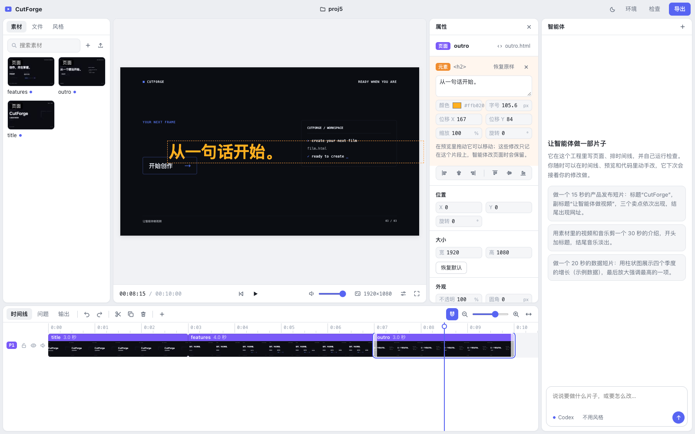
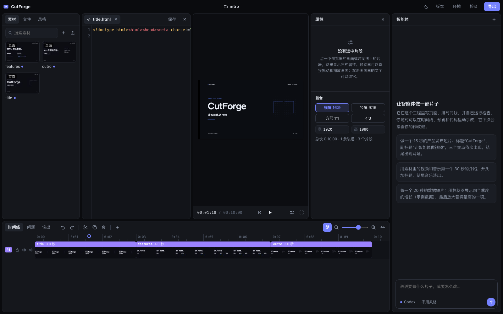

一句话：“做一个 10 秒的产品介绍短片……三个卖点依次出现，结尾显示‘开始创作’。”Codex 用了 82 秒写好三个镜头，自己运行检查，零问题。
把 OpenFilm 的影片格式和检查、OpenTake 的多智能体接入和剪映导出合在一起，再加上写程序时习惯的代码编辑器和“问题”面板。
Codex、Claude Code、Gemini CLI、opencode，或任何能在命令行里跑完任务的智能体。没跑完就换下一个，从当前进度接着做。
预览和导出用同一个播放器。画面里直接拖动、缩放；双击文字就能改字、改颜色。
多轨、画面条、波形、吸附；拖动、裁剪、切开、复制、停用、撤销，右键菜单和快捷键。
每个镜头就是一个网页。打开代码改一行，⌘S 保存，预览立刻更新；智能体改了文件，界面自动跟上。
找出写法错误、缺文件、画面不确定、文字被裁、纯色帧，并生成联系表。智能体会改到没有错误为止。
MP4、剪映草稿、FCPXML、GIF、透明视频、分轨声音、字幕、幻灯片 PDF。
选中页面里的任何元素，改文字、颜色、字号，或者拖动它。改动只记在这个片段上，页面代码不动；智能体下次改页面时会保留你的修改。

代码编辑器、预览、时间线放在一起。浅色、深色两套主题，默认跟随系统。

影片格式兼容 OpenFilm 协议的一个子集。智能体本来就会写网页，不用学新东西。
<!-- film.html：一个 section 一条轨道 -->
<meta name="viewport" content="width=1920, height=1080">
<section>
<iframe id="title" src="scenes/title.html#t=0,4"></iframe>
<video src="assets/demo.mp4#t=12,18" at="4"
speed="0.5" style="left: 160px; width: 1600px"></video>
</section>
<section>
<audio src="assets/music.mp3" volume="0.5"></audio>
</section>// scenes/title.html：一个镜头，一个函数
window.film = {
duration: 4,
frame(t) {
// 画出第 t 秒的完整画面
title.style.opacity = Math.min(1, t / 0.6);
},
};
// 唯一的规则：同一个 t 永远画出同一幅画面所有导出都在本机完成。
| 格式 | 说明 | 状态 |
|---|---|---|
| MP4 | H.264，可选帧率、尺寸（含 4K）、-14 LUFS 响度标准化 | 可用 |
| 剪映草稿 | 视频、图片、声音分轨，位置、缩放、变速、音量、淡入淡出都带过去；页面渲染成透明视频；字幕另存 .srt | 未在剪映里验证 |
| FCPXML | Final Cut Pro、DaVinci Resolve 时间线，素材一起拷出 | 未在剪辑软件里验证 |
| 透明视频 | WebM（VP9）、MOV（ProRes 4444） | 可用 |
| GIF | 自动生成调色板 | 可用 |
| 声音 | 混音 WAV + MP3，或每条轨一个 WAV | 可用 |
| 字幕 | SRT + VTT，收集字幕轨和声音旁的 .vtt | 可用 |
| 静帧、幻灯片 | PNG；每个镜头一页的 PDF | 可用 |
从 Releases 下载 Mac（Apple 芯片／Intel）或 Windows 安装包，装好就能用；导出视频需要电脑上有 ffmpeg 和 Chrome／Edge。下面是从源码运行的方法（需要 Node 22）。
git clone https://github.com/fangkyi03/cutforge.git
cd cutforge && npm install./cutforge open examples/intro # 智能体做的示例
./cutforge # 新建工程
./cutforge doctor # 检查这台电脑缺什么选一个装好的智能体（例如 npm i -g @openai/codex），描述片子，点发送。做完后在时间线和预览里改，再导出。
目标是覆盖 OpenFilm 与 OpenTake Standard 的全部功能。完整排期见 ROADMAP.md。
| 批次 | 内容 | 状态 |
|---|---|---|
| v0.1 | 格式、预览、时间线、检查、智能体接入、MP4 与剪映导出 | 已发布 |
| 第 1 批 | GIF、透明视频、声音、字幕、静帧、幻灯片、FCPXML、版本存档 | 已完成 |
| 第 2 批 | 素材库、自制转场与特效、配音／音乐／图片生成、语音转字幕 | 计划中 |
| 第 3 批 | 画布与故事板、技能生态、风格库升级、API 密钥直连模型 | 计划中 |
| 第 4 批 | 录屏与自动运镜、剪映多版本实测与原生字幕 | 计划中 |
| 第 5 批 | Mac／Windows 安装包、一键更新、并行渲染 | 计划中 |